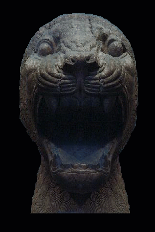
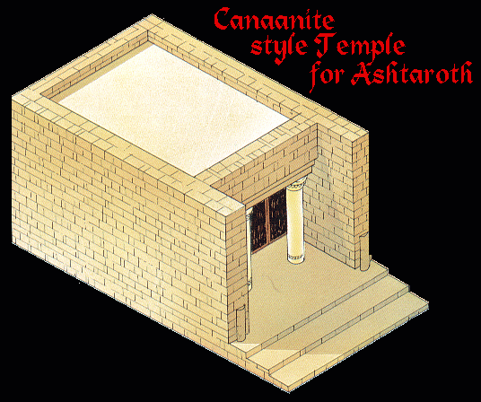
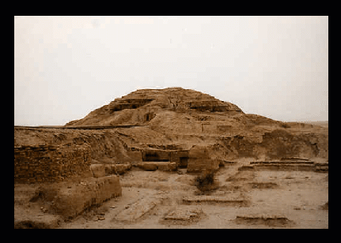
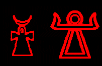
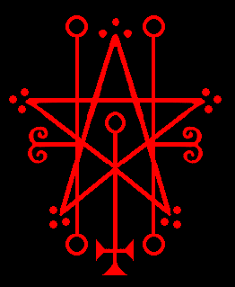
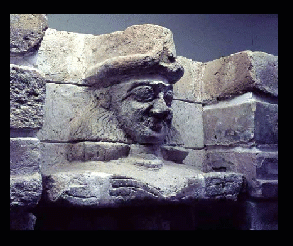
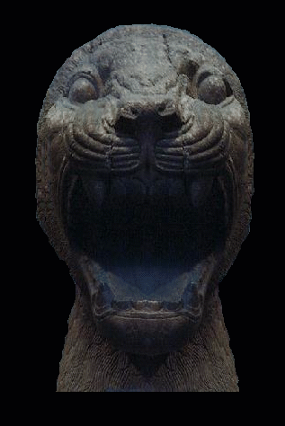
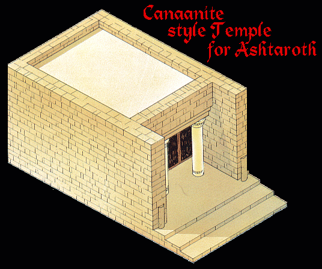
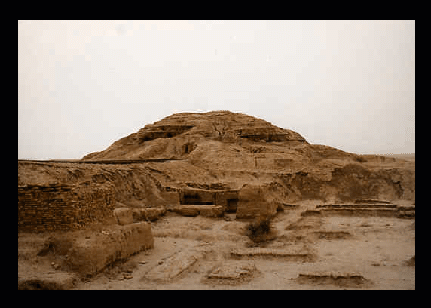
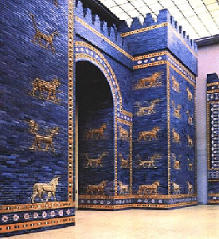

|  |
|  |  |
Astaroth is a very ancient Goddess. She has been with humanity, as have Satan and Beelzebub, since the beginning. Astaroth is Satan's daughter. She did not want this to be known until recently [October 2016]. She has always been very popular, much loved and revered in locales where she was worshipped. Because she has been with us since the beginning, she has been known by several different names, as she has been the Chief Goddess in many different areas and cultures. She has been known as a Goddess of fertility, love, and war.
"Astaroth appears with a very immense aura. It has a very soft blue color, not soft in terms of strength, but soft in a sense of beauty. Astaroth’s energy is invigorating and comforting; it is truly beautiful in every way. She has long Golden Hair; she is quite tall and is surrounded by a vibrant white-gold. I feel her most when I make the connection during the Invocation of the Four Ruling God Powers of Duat. She is always there to guide me when I feel lost or I am struggling. Her voice is very powerful, Astaroth is very caring, but she is very clear and concise when she is directing me. She helps me so much and I am so thankful to Her for everything.
She was known to the Canaanites as ASTARTE, to the Sumerians, she was known as INANNA, to the Babylonians, she was known as ISHTAR to the Assyrians and the Akkadians, ASHTART, ASHTORETH, ASHERAH, and ASTORETH, to the Egyptians, ISIS, ASHET AND ASET, to the Phoenicians, she was known as TANIT-ASHTART and ASHTAROTH. Her Ugaritic name was ANAT.
– Vovim Baghie
 derived from the Egyptian Ankh  |  | |
The clusters of three dots at the points of the star of her sigil are extremely ancient and denote her high spiritual rank. Her sigil also depicts important points of the human soul, as can be seen from the Venus glyph with the inverted cross symbolizing the all-important solar chakra and the pillars of the soul on each side.
As the Sumerian Goddess "Inanna" she was known as a powerful warrior and her sacred animal was the lion. Below are photos of the Lions that guarded her temple at Nimrud.
|
|  |
|  |  |
Her sacred city was Uruk, one of the oldest cities of Sumer where she had her temple; in the lower right photo above are the ruins. Under her rule, the people of Sumer and their communities prospered and thrived. She had shrines and temples in many cities in the Ancient Middle East.
Her Sumerian title "Queen of Heaven" was stolen by Christians and used for their fictitious "Virgin Mary" which is an imposter.
Astaroth was also the Babylonian Goddess, Ishtar. Babylonian scriptures called her the "Light of the World," "Goddess of Goddesses," and "Bestower of Strength."
|  | The "Ishtar Gate," built approximately 575 BCE was the main entrance into Babylon. It was the eighth of one of eight gates of the inner city. King Nebuchadnezzar II of Babylon dedicated the Gate to Ishtar. It was one of the most impressive monuments in the ancient Near East. The Ishtar Gate was decorated with dragons, bulls, and lions. Along with Ea [Satan] and Enlil [Beelzebub], she wound up in the grimoires when Judeo/Christianity arrived on the scene as one of the top Crowned Princes of Hell. These three were the most popular and well known deities in the Middle East. Their reputations were destroyed; they were viciously slandered, blasphemed, and demonized; labeled as "evil." |
"Although Sidon is respected, it could not be forgotten that her goddess was Ashtart, a name the Israelite scribe wrote with the five consonants 'strt', and vocalized them by the vowels of the familiar Hebrew word for "shame," making the Sidonian goddess appear in the bastard form Astoreth."
–Excerpt from "Recovering Sarepta, A Phoenician City by James B. Pritchard, 1978
"Of the various spellings of the name, Astarte, is found the Tel Amara letters. The Hebrew Astoreth arose when the rabbinical school of the Massoretes in the sixth century decided to adopt a conventional system to compensate for the lack of vowels in written Hebrew, and at the same time to insert in the names of foreign divinities the vowels from the word 'boshet', meaning abomination."
-Excerpt from "Who's Who Non-Classical Mythology by Egerton Sykes, 1993
Above are the remains of the Temple Isis, originally on Philae Island, had to be moved to Agilqiyya Island [above] during the construction of the Aswan dam to save them from flooding. |
Astaroth answers truly concerning past, present, and future She discovers all secrets, and is an excellent teacher of the liberal sciences. She causes one to have prophetic dreams and/or visions about the future and gives insight into the unknown. She also counsels humans who are close to Satan and actively working for him. She obtains friendship of those in power and represents luxury and ease.
Easter [originally known as "Ashtar"] was stolen from her by the Christians.
Astaroth is very beautiful with light blonde hair. Though tall, she is delicately built. Astaroth's colors are red and blue. She sometimes appears with white wings with red and blue streaks in them. She often visits me and other JoS clergy on her own and is a friend and guide for us.
– High Priestess Maxine
SIGIL
IMAGE
Artwork done by Marcos Macias

Back to Demons, the Gods of Hell

{kind=link}
{kind=link}